-
DEFORESTATION
0
trees cut
15 billion trees per year
-
INSTAGRAM POSTS
0
new instagram posts
24.2 billion posts per year
-
STARVATION
0
people starved to death
7.67 million people per year
-
WASTED FOOD
0
tons of food wasted
2.3 billion tons per year
-

SEA LEVEL RISE
0
thousand litres water
1,224 trillion litres per year
-
FACEBOOK LIKES
0
new facebook likes
946 billion likes per year
DEFORESTATION
0
trees cut
- 476
per second - 28,538
per minute - 1,712,328
per hour - 41,095,890
per day - 15 billion
per year
"Forests are more than just a collection of trees—they are integrated ecosystems and home to some of the most diverse life on Earth. They are also major players in the carbon and water cycles that make life possible. When forests are lost or degraded, their destruction sets off a series of changes that affect life both locally and around the world."
Sources or other links:INSTAGRAM POSTS
0
new instagram posts
- 1117
per second - 67,000
per minute - 4,020,000
per hour - 96,480,000
per day - 35.2 billion
per year
"We all know activity on the internet on a daily basis moves at lightening speed, but there’s something about having the numbers in front of you that makes it just a little bit more fascinating."
The trouble with this visualization
was that there were a lot of contradicting sources of information and I had to pick one out of the many available.
STARVATION
0
people starved to death
- 0.25
per second - 15
per minute - 875
per hour - 21,000
per day - 7,665,000
per year
"Every day too many men and women across the globe struggle to feed their children a nutritious meal. In a world where we produce enough food to feed everyone, 795 million people – one in nine – still go to bed on an empty stomach each night. Even more – one in three – suffer from some form of malnutrition."
Sources or other links:WASTED FOOD
0
tons of food wasted
- 73
per second - 4,376
per minute - 2,262,557
per hour - 6,301,369
per day - 24.2 billion
per year
"When we scrape off our dishes after a large meal, too full to finish the remaining scraps on our plate, we rarely pause and think about the significance of our action. It seems routine to us: if we have leftover food scraps that are unfit for eating, shouldn’t they be thrown in the garbage? Our routine practices, unfortunately, make it difficult for us to conceptualize the magnitude of global food waste. The problem is bigger than we think."
Sources or other links:SEA LEVEL RISE
0
thousand litres of water
- 38,812,785
per second - 2.33 billion
per minute - 140 billion
per hour - 3.35 trillion
per day - 1224 trillion
per year
"Global sea level rose about 17 centimeters (6.7 inches) in the last century. The rate in the last decade, however, is nearly double that of the last century."
Although the information from the source, NASA, focused on change in millimeters I referred to other websites and did some math to convert the numbers into litres for more a poignant effect.
FACEBOOK LIKES
0
new facebook likes
- 30,000
per second - 1,800,000
per minute - 108,000,000
per hour - 2.59 billion
per day - 946 billion
per year
"We all know activity on the internet on a daily basis moves at lightening speed, but there’s something about having the numbers in front of you that makes it just a little bit more fascinating."
This data is used for contrast
with the more morbid realities of our time.